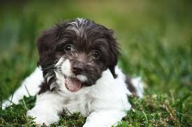

A Cockapoo can be the result of mating either the American Cocker Spaniel or English Cocker Spaniel with a Poodle. They have been known in the United States since the 1950s.
The cockapoo gets its cockamamy name from its history of being crossbred from cocker spaniels and poodles. For more detailed information about the breed itself, history and health expectations, head over to this article all about the cockapoo breed.

Generally, Cockapoos are highly affectionate, outgoing, and become playful at the drop of a hat. But they have one trait that stands out above the rest. In June, we conducted a poll of our members, asking them to choose one word that best describes their Cockapoo’s personality.